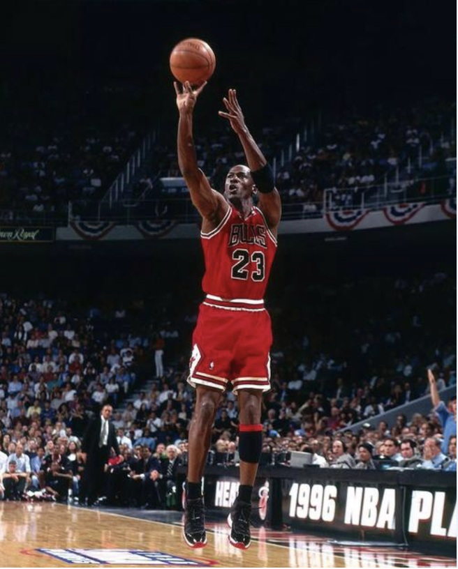

想说说投篮，因为我一开始姿势很差，也很固执，所有动作的变化都要经过自己的辩证（却很少看教学材料），在不断的调整后命中率开始提升，而且比较稳定，相信只要按现在的方式一直练习是正确的，所以我觉得我能说明白这个问题，可以跟大家分享。
[TOC]
端正方向
我这里想说的主要是端正一些认识，细节相信百度或google肯定都能搜到很多资料，我不打算把这些资料汇总整理，我只想分享下自己的学习体验，特别是一些关键的地方。
我偶然在网上看过一篇文章，发现自己的投篮姿势修炼历程，几乎历经了里面说的所有错误动作并逐一改正：图解标准的投篮动作，狠重要，狠详细，因此我觉得自己有资格写这么一篇文章分享经验，所有弯路我都走了一遍，那么还有什么错误动作我是不能说明白的呢？？
投篮还是射ball
以前我喜欢说去球场射ball（当然是指篮球，我是南蛮我自豪），觉得用国语说投篮很low。但是现在改正姿势后，我发觉用“投”这个词真的无可挑剔。古代战争的电影，包括指环王，见到里面的投石车，就是那种投出去的感觉，有后拉和下拉得到的弹力，有投出去的抛物线。所以，我现在只能说，篮球就是要投出去。
正身还是侧身
有一段时间我觉得应该是正身面对篮框，因为侧身侧多少？怎么保证每次侧身都是同样的角度？
但是我现在不再怀疑，侧身是正确的。因为，侧身侧多少并不重要，关键是要侧。为什么？因为侧身最重要的目的是要保证单手投篮，只要侧身了就能保证最后的动作是一只手在前一只手在后，那么最后的动作阶段里面，肯定是一只手在用力，即使前面阶段是两只手都在用力也无所谓了。最后出手才是关键
技巧
基于前面的端正方向，这里说下技巧。这里的技巧是基于我认为的标准动作来说的，并不是唯一的（球场上经常见到大叔大爷们用各种匪夷所思的动作保持7成以上的命中率，所以我必须这么说）。
找到你的狙击枪
- 找直线
怎么才能保持较高的命中率，即使在对抗中也一样？除了手感外，我一直相信肯定是有技巧的，不然万一感觉没了怎么办，我不相信专业选手都是靠手感，但是当然，手感来了挡都挡不住。
关键是手肘，利用人的身体结构：手肘只能内弯。想象一下，当你侧身对着篮筐右手托球时，以右手和篮球框的连线为界，只要你是向前投球，你就只能向界的左面投，不可能向右投，因为你用右手掰手腕时的方向是向左。
当你不断调整侧身的角度（无限接近于左肩、右肩、篮筐三点成一条直线），这时候你的右手只要是向前投球，那么连偏向左边都会觉得别扭。那么就行了，既然偏向右边和偏向左边都别扭，你就只能直线投球，那么你就找到那个只有力大力小还能影响你命中率的直线了。当你练习惯了之后，这个角度就没关系了，手感自然能够通过姿势的调整慢慢找到，不再是全凭感觉。 - 向前投
对的，向前投也需要技巧，不然你做出来的动作真的可能不是向前投。两点成一线的道理大家都懂，右手手腕和手肘这两点是稳定的两点（中间没有别的关节了），因此就是你的小臂要瞄准篮筐，重点来了：你的右手小臂就是的你狙击枪，出手时，用你的右手小臂瞄准篮筐，这就是向前投。
压手腕
- 用左手压右手手腕是为了投，没有压手腕很难感觉到投这个字。
- 压手腕是为了能拨球使球旋转，这么球在空中时才会稳，才不会飘
- 压手腕是为了手能充分接触篮球的同时使上力，这个过程有一种蓄力的感觉，就像射箭要先拉弓，投篮前先压手腕蓄力。试试投一个粘了水的篮球，如果你没压手腕，除非你是扔球，否则你可能会手滑感觉用不上力，但是压手腕能使你投一个粘了水的篮球时也能用上力。
保持出手姿势
- 为了装B？其实是为了能拨球使球旋转，出手后弯曲手腕指尖向下，能保证你投球的最后一刻一定有一个拨球的瞬间。记住，绝对不是为了装B。
- 最后出手的瞬间，是中指还是食指拨球呢？看下图就不用纠结了，两个手指形成V字一左一右托着篮球最后出手，球的方向也更稳定。
抬高右手肘
不要把球托在肩上，因为这样有推（铅）球的感觉，咱们说的是投球。除非你力气不足，在投三分，不然不应该有推的动作。另外，托在肩上也容易使篮球刮到头部，比如耳朵。
记住，动作越多，过程越长，越容易出错。所以，抬高右手肘，同时能使整个投篮的动作过程尽可能短。另外，抬高右手手肘，能使你的眼睛通过手臂间看到篮筐，也不容易被扶球的左手挡住视线。
左手
左手主要是扶球和护球，一般不应该参与到投球过程的发力，甚至因为要压手腕，反而是下压阻止右手投球，导致产生类似射箭时拉弓蓄力的感觉。
另外还有个两个小技巧：
1、出手后，左手手肘和手腕都保持微微弯曲，不要伸直，进一步拉大出手时左手和右手的距离。
2、左手手掌最后保持外摆的姿势，就像下图库里的动作，从正面相对而视，库里的两手组成了一个“IS”的字母线条，加上前面说的第一点，最后整个左手包括手掌就是要变成S型。这个方式对于左手有习惯用力毛病的特别有效，目前我也还在按这个方法改，左手在最后故意做出外摆的动作能保证绝对不会再用上任何力干扰到右手的出手了。
最后来两张乔丹的出手，虽然看不到左手的S型，但是用S型是为了改毛病，如果没有左手用力的毛病，那像乔丹这样，看着也是很自然顺畅舒服的。

这一切一切，都是为了保证你能很自然的单手投球。相信我，单手投篮力气足够的，真的不需要双手，习惯之后甚至比双手力气还要大。
如何练习
我建议一开始先练习短距离，越短越好，就是站在篮下的那种，用上面的方法练习。学东西应该从简单开始，想不明白那些一开始就练习中远距离投球的，特别是远距离投球的，除非他们准备永远只投三分。
包括上面说的，动作越多，过程越长，越容易出错。练习的时候，也应该从最少最必要的动作开始，不然记住这个忘了那个，只是自己给自己设置障碍。
大道至简，一切复杂的东西到了最后，都应该回归到简洁。
以上是我目前所有的体会和领悟，不敢藏私，只为了感恩，也希望错误能被指正。